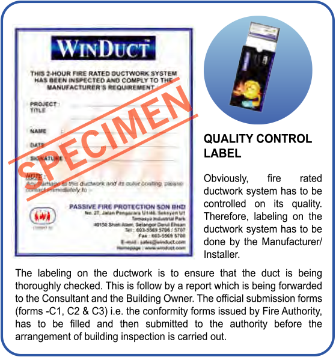
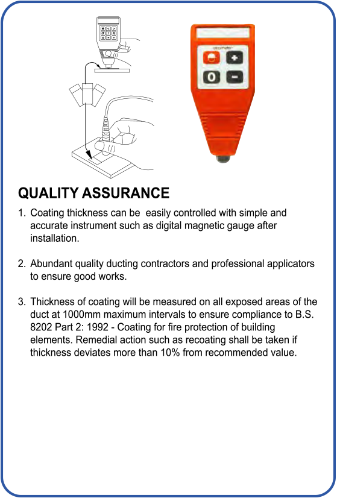
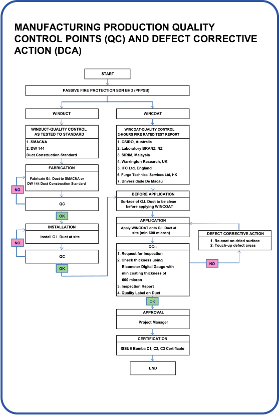

Quality Assurance



This installation of WinDuct®®- 2 Hours fire rated ductwork comprises of two sections:
- The installation of sheet metal ductwork accordance to SMACNA or DW 144 G.I. Duct Construction Method.
- The application of WinCoat™ on the G.I Duct surface to provide 2-Hours fire rating as tested and approved by the Local Fire Authority.
Afer the installation of the WinDuct®® system, representative of Passive Fire Protection Sdn Bhd and clients will conduct the completed fire rated ductwork inspection, in respect of G.I. Ductwork conformity and coating thickness are within the recommended values.